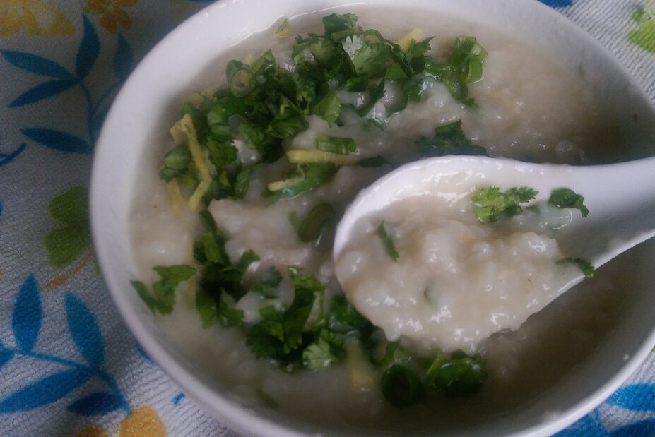

Congee Recipe

Description
The recipe involves three simple instructions.
As a traditional comfort food, rice porridge has had an important place in Chinese food culture for centuries.
Ingredients
- 3 quarts water
- 1½ cups medium-grain rice
- 5 ounces white fish, cut into small chunks
- 1 (3 inch) piece fresh ginger root, thinly sliced
- 1 spring onion, sliced
- 2 teaspoons chicken bouillon granules
- ½ teaspoon ground black pepper
- 3 tablespoons chopped fresh parsley
- ½ teaspoon salt, or to taste
Steps
- Combine water and rice in a large pot over high heat. Bring to a boil; simmer for 5 minutes. Reduce heat to medium-low and simmer until rice is tender, about 30 minutes.
- Combine fish, ginger, spring onion, chicken bouillon granules, and pepper in a bowl. Let marinate for 15 minutes.
- Stir fish mixture into the pot. Simmer gently until rice is very soft and fish is falling apart, about 20 minutes. Season with parsley and salt.